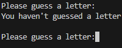
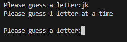
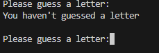
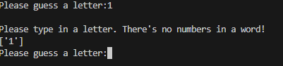
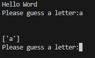

INSERT IMAGE
INSERT IMAGE
INSERT IMAGE
In this task, I have been working on the guess function in the game. This includes making sure the guess is one letter, is actually a letter, and if the letter has already been guessed. This does not include correct/incorrect guesses.
| Input | Expectation | Output |
|---|---|---|
| N/A | This input is to check if the while loop works and tells the player to guess again. |

It works accordingly. |
| jk | This input is to check if the while loop and the if statement works when guessing more than one letter. |

If statement works accordingly and loops around. |
| *space* | Because of the way I have coded this, a single space is able to go past the code because it is being recognised as 1 character. I put a separate code so that 1 character is able to go by. This is to check that a single space can be blocked out of leaving the line of code. |  Works accordingly. |
| 1 | By using an if statement, it should loop back, saying that there are no numbers in the word. | I do not have a screenshot to show the results, but the code broke when typing in a string/letter. The integer input worked, except at the cost of the whole code |
| "1" and "a" | Instead of using an if statement, I am now using try and except to check if it is an integer. Through try and except being able to continue without breaking, it should work and repeat the loop. |

Though it works as intended, it went through all if statements and was included in the list Works accordingly. |
"Quote"
"Quote"
in areas with seasonal climate, wood produced at different times of the year may alternate light and dark rings. In temperate climates, and tropical climates with wet-dr yseasona lclimate, woodp roduced at differet times of they earm ya ltneatleightn ad dakr ings. In areas with seasonal climate, wood produced at different times of the year may alternate light and dark rings. In teperate climates, and tropical climates with wet-dry seasonal climate, wood produced at different times of the year may altnerat elight nad dark rings.
in areas with seasonal climate, wood produced at different times of the year may alternate light and dark rings. In temperate climates, and tropical climates with wet-dr yseasona lclimate, woodp roduced at differet times of they earm ya ltneatleightn ad dakr ings. In areas with seasonal climate, wood produced at different times of the year may alternate light and dark rings. In teperate climates, and tropical climates with wet-dry seasonal climate, wood produced at different times of the year may altnerat elight nad dark rings.
INSERT IMAGE
INSERT IMAGE
in areas with seasonal climate, wood produced at different times of the year may alternate light and dark rings. In temperate climates, and tropical climates with wet-dr yseasona lclimate, woodp roduced at differet times of they earm ya ltneatleightn ad dakr ings. In areas with seasonal climate, wood produced at different times of the year may alternate light and dark rings. In teperate climates, and tropical climates with wet-dry seasonal climate, wood produced at different times of the year may altnerat elight nad dark rings.